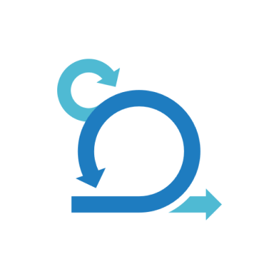

SCRUM ACADEMY

Módulo 3:
Eventos do SCRUM
O que são os eventos do SCRUM?
Os eventos do Scrum são etapas fundamentais dentro dessa metodologia ágil de gerenciamento de projetos. São momentos específicos que ocorrem durante o ciclo de vida de um projeto Scrum, com o objetivo de promover a colaboração, a transparência e a entrega de valor de forma incremental. Esses eventos são bem definidos e possuem papéis e responsabilidades claras para cada membro da equipe.
Eventos principais no SCRUM:
1- Sprint:
Pode-se dizer que o Sprint é o conceito principal do método Scrum, sendo, inclusive, um de seus pontos-chave. Nos Sprints é que serão aplicados os demais eventos, discutidos os avanços do projeto e empregadas as melhores soluções para, então, chegar ao produto final ou parte dele.
Os Sprints devem conter orientações e um conjunto de requisitos básicos a serem implementados pelos desenvolvedores.
Além disso, o processo deve se pautar pelo estabelecimento de metas e impor um ritmo mais acelerado nas execuções, engajando e aumentando a produtividade dos envolvidos.
Em resumo, Sprint seria cada uma das fases de um projeto, estipuladas em espaços determinados de tempo que podem variar de duas a quatro semanas.
2- Sprint Planing:
O Sprint Planning é o evento que acontece no início de cada sprint, que é um período fixo em que o trabalho é realizado.
Nesse evento, a equipe de desenvolvimento, o Product Owner e o Scrum Master se reúnem para definir o objetivo do sprint e selecionar as tarefas que serão realizadas.
É nesse momento que são definidas as histórias de usuário que serão desenvolvidas e estimadas, além de estabelecer um plano para alcançar os objetivos do sprint.
3- Daily Scrum:
O Daily Scrum é uma reunião diária curta que ocorre durante todo o Sprint.
Nesse evento, a equipe de desenvolvimento se reúne para discutir o progresso, as dificuldades e as próximas atividades.
Cada membro da equipe compartilha o que fez no dia anterior, o que planeja fazer no dia atual e se há algum impedimento.
O objetivo do Daily Scrum é manter todos os membros da equipe alinhados e garantir que o trabalho esteja progredindo de acordo com o planejado.
4: Sprint Review:
O Sprint Review é uma reunião que ocorre ao final de cada Sprint, em uma equipe de desenvolvimento apresenta trabalhos concluídos ao Product Owner e a outras partes interessadas.
Durante essa reunião, são discutidos os incrementos de produto desenvolvidos, as funcionalidades implementadas e as melhorias realizadas.
É uma oportunidade para obter feedback e ajustar as próximas etapas do projeto.
5- Sprint Retrospective:

A Sprint Retrospectve é uma reunião realizada após o Sprint Review, em que a equipe de desenvolvimento reflete sobre Sprint que foi concluído.
Nesse evento, são identificados os pontos positivos e negativos do Sprint, as lições aprendidas e as possíveis melhorias para o próximo ciclo.
A Sprint Retrospective é uma oportunidade para a equipe se autoavaliar e buscar constantemente aprimorar seu desempenho.